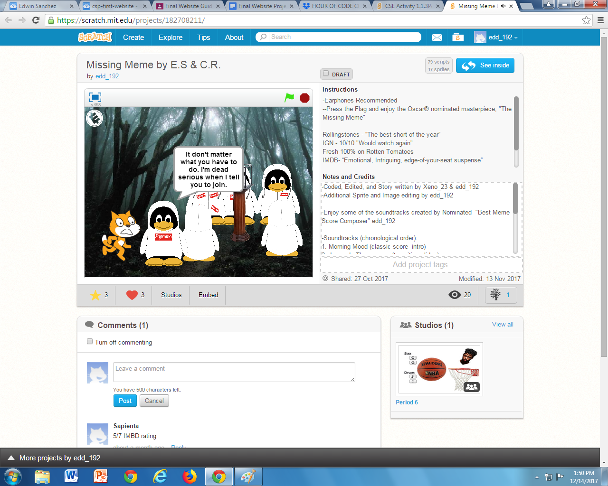
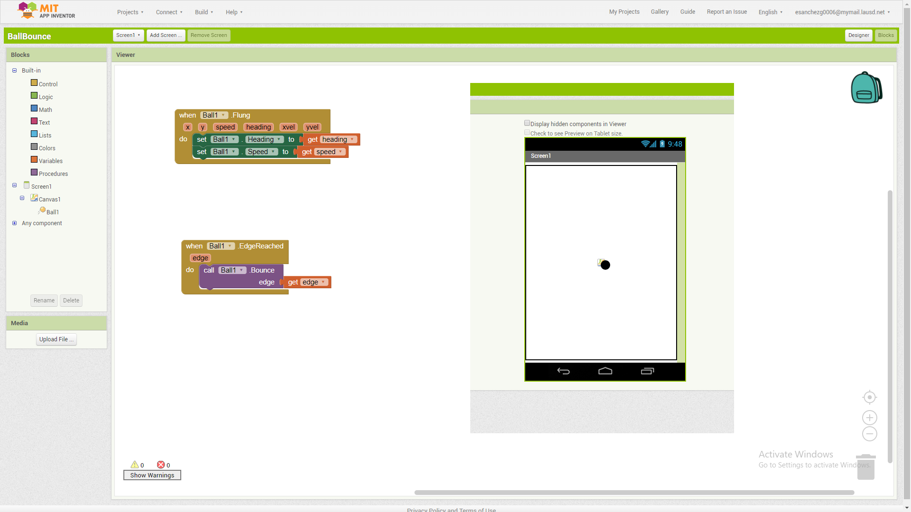

About Me
Home
Portfolio
This is my Portfolio Page!
 This scratch project is the first project I created by myself with novice skills in scratch. Simple, yet fun for me to code and use, coding this project was fairly easy as long as I knew what I wanted the penguin to perform
This scratch project is the first project I created by myself with novice skills in scratch. Simple, yet fun for me to code and use, coding this project was fairly easy as long as I knew what I wanted the penguin to perform

This is the second project which is a story (or animation) I created with a classmate which is also the longest project made in the class. The total run time of this story is about 7 minutes from start to finish. which took us about a whole month to finish, first week we used to plan our story and the other three weeks to work on the coding.
My first certificate of completion on hour of code. I recieved this certificate by completing the App Lab Tutorial which taught me how to create an app using block code. Pretty cool stuff you can make there.
I recieved this certificate by completing the python tutorial where you need to control an 8-bit figure turtle with code. Coding with the language python to make the turtle move around at any desired location and direction.
An interactive storyboard I made with the initial help from a classmate, this project's storyline pick up with the same overall story concept as the scratch animation but in this case you are the cat who is still trying to recover his prized item in this short story. But in this case, you make the decisions.
The image above helped create and plan outline my story planned, this helped guide myself on how every question should be layed out and based on. Every tile as has subcontext to lead the story progress. I'd say creating this was just as fun as creating the scratch project.
[3.1] As for the first segment of this lesson 3.1 we had to follow lesson instructions to create our first basic app. This first portion tought how to create a simple text to speech app which is self explanatory. In the box visible in the app preview window (small) type any text we want and the program will run a speech service to allow speech.
[3.2] This section picks up from the text to speech lesson I covered up there. While using the existing blocks of code nothing was changed but I added something new. The blocks of code stacked together on the left is used to run the text to speech service while the blocks on the right are used to allow motion detection using a device's accelerometer to trigger the speech service/command.

[3.3] A new concept is introduced to me folling the required steps given to me, creating an interactive game that allows desired movement and direction of a ball with touch sensing or gestures. The code to the left of the cropped preview frame explains to us what the ball should do depending on the touch direction or gesture allowing the ball to move.
[3.4] Coding how to draw was kind of tricky, but the guide helps a lot as it explains what should be in the blocks of code. The top cluster of code shown in the screen capture is telling us what it will do with every touch detected in the digital canvas we have which is basically blank. The code uses the touch information to then create a line or a trail of continuos marking. The other block of code on the bottom is an accelerometer component to reset our canvas when the device is shaken. Like an etch a sketch.